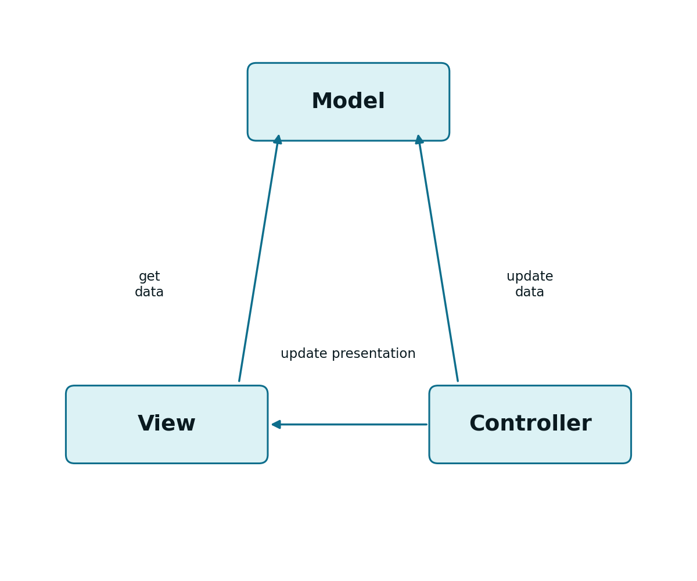
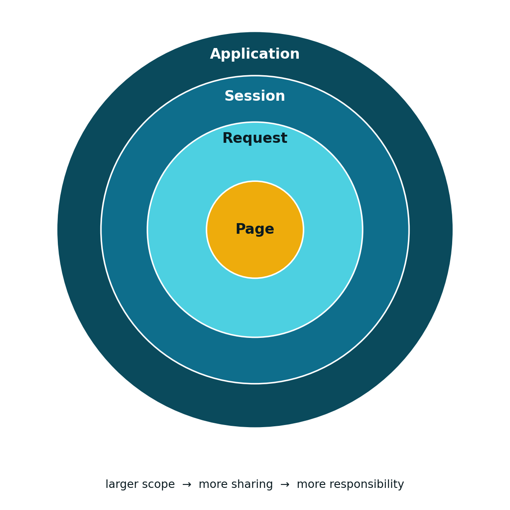

5 The Stateful Model: Sessions and JSP
5.1 HTTP Is Stateless: the Problem
The HTTP protocol is stateless (see Chapter 1): each request is independent, and the server does not, by itself, retain any memory of previous requests. At the protocol level, there is no notion whatsoever of a “user with an active session”.
This raises an immediate practical problem: if a user authenticates in one request, how does a following request, minutes later, know that this user is still authenticated? The answer relies on two complementary mechanisms:
- Cookies: a small piece of information stored on the client side, automatically resent by the browser on every following request
HttpSession: an object stored on the server side, associated with an identifier that the client returns on every request
5.3 Sessions (HttpSession)
Storing state on the server side requires a dedicated object: the HttpSession. A session is obtained, or created, from the request:
HttpSession session = request.getSession(); // creates it if it doesn't exist
HttpSession session = request.getSession(true); // equivalent, explicit
HttpSession session = request.getSession(false); // NEVER creates one; returns null if there isn't oneOnce obtained, the session stores and returns information through attributes, and can be explicitly terminated:
session.setAttribute("email", "foo@fool.com");
String email = (String) session.getAttribute("email");
session.invalidate(); // ends the session
session.setMaxInactiveInterval(1800); // inactivity time, in secondsOne piece is still missing: if HTTP has no memory of previous requests, how does the server know that two successive requests belong to the same session? The answer is, once again, cookies: by convention, the session identifier travels in a cookie named JSESSIONID, automatically created by the Servlet Container on the first call to getSession().
JSESSIONID=22562577CE80EF3B1DAAA0E48F2B6392
When the client does not accept cookies, there is an alternative: encoding the session identifier directly in the URL.
http://localhost:8080/CapitaisAPI/country;jsessionid=829F8836C240B51DD2F074259F242833
It is good practice to always call response.encodeURL(url) when building a destination URL: if cookies are active, the method returns the URL unchanged; if they are not, it automatically appends the jsessionid.
5.4 Session-Based Authentication
Combining the two mechanisms above yields the classic session-based authentication pattern. After validating the credentials, the LoginServlet creates a session and stores the user’s identifier in it:
@WebServlet("/login")
public class LoginServlet extends HttpServlet {
protected void doPost(HttpServletRequest request, HttpServletResponse response)
throws ServletException, IOException {
String user = request.getParameter("user");
String pass = request.getParameter("pass");
if (dao.validateUserCredentials(user, pass)) {
HttpSession session = request.getSession(true);
session.setAttribute("UserName", user);
response.setContentType("application/json");
response.getWriter().print("{\"message\":\"OK\",\"user\":\"" + user + "\"}");
} else {
response.setStatus(HttpServletResponse.SC_FORBIDDEN);
response.getWriter().print("{\"message\":\"FORBIDDEN\",\"error\":\"Invalid login or password\"}");
}
}
}Note that dao is an instance of a Data Access Object (DAO) — a dedicated data-access object, already mentioned in Chapter 4 — responsible, in this case, for validating the credentials received: it typically queries a user database, and returns true or false depending on whether the user/pass pair is valid.
Any protected endpoint checks, at the start of its own doGet() or doPost(), whether a valid session with that attribute exists:
HttpSession session = request.getSession(false);
if (session == null || session.getAttribute("UserName") == null) {
response.setStatus(HttpServletResponse.SC_FORBIDDEN);
response.getWriter().print("{\"error\":\"Authentication required\"}");
return;
}
// authenticated request: continue normal processingLogout simply amounts to ending the session:
5.5 The MVC Pattern with Servlet and JSP
Chapter 1 introduced the MVC pattern at a conceptual level, and Chapter 4 showed how a Servlet acts as Controller. The pages built in Chapter 2 already play the role of View, but they are static: their content does not change depending on the request. This section shows an alternative way of building the View — this time generated dynamically on the server side, from the data the Controller hands it.

In a presentation-oriented application, the Servlet receives the request and decides what to show, but delegates the actual generation of HTML to a JavaServer Page (JSP). The Model, in turn, is a plain Java class (for example, a DAO), independent of both.
The Servlet connects to the JSP through a RequestDispatcher: it places the data to be shown in a request attribute, and forwards the request itself to the page:
request.setAttribute("user", user);
request.getRequestDispatcher("/home.jsp").forward(request, response);A JSP is a text document that mixes two kinds of content: static HTML and dynamic script elements. The first time it is requested, the Servlet Container automatically converts it into a Servlet class, which from then on behaves exactly like any other Servlet, in the role of Controller.
5.6 A Simple JSP Example
<%@ page language="java" contentType="text/html; charset=UTF-8" pageEncoding="UTF-8"%>
<% String name = (String) request.getAttribute("userName"); %>
<!DOCTYPE html>
<html>
<head>
<meta http-equiv="Content-Type" content="text/html; charset=UTF-8">
<title>A JSP Page</title>
</head>
<body>
<h1>Hello, <%= name %>!</h1>
</body>
</html>The <% ... %> block (scriptlet) contains arbitrary Java code; the <%= ... %> block (expression) inserts the value of a Java expression directly into the generated HTML. It is exactly this userName attribute, placed in the request by the Servlet through request.setAttribute(...), that the JSP retrieves here.
5.7 Lifecycle and Implicit Objects
A JSP’s lifecycle follows the same model as the Servlet it is converted into (see Chapter 4), with two details of its own:
- The container automatically recompiles the JSP whenever the
.jspfile changes - Instead of
init()anddestroy(), the JSP offers the methodsjspInit()andjspDestroy()
Another practical difference: inside a JSP, a set of objects is automatically available, with no prior declaration, called implicit objects:
| Implicit object | Type |
|---|---|
out |
JspWriter |
request |
HttpServletRequest |
response |
HttpServletResponse |
session |
HttpSession |
page |
Object |
Because of the implicit object out, a JSP never needs to explicitly obtain a PrintWriter: out is used directly.
5.8 Scopes: Sharing Information Within the Server
Just as Servlets can share information with other modules through attributes (see Chapter 4), those attributes always exist within a given scope. There are four kinds of scope:
- Web context (or application context): a single one per application, shared by all modules and all users
- Session: one per user, kept across several requests from that user
- Request: one per request, lost as soon as the response is sent
- Page: exclusive to JSP, not used in this course
All scopes follow the same interface: setAttribute/getAttribute methods, and getAttributeNames() to list everything stored there.
Web context, shared by the whole application:
ServletContext context = request.getServletContext();
context.setAttribute("dbHost", "localhost");
String dbHost = (String) context.getAttribute("dbHost");Session, already introduced, shared only by the same user:
HttpSession session = request.getSession();
session.setAttribute("email", "foo@fool.com");
String email = (String) session.getAttribute("email");Request, the most restricted of all, shared only between modules processing the same request (for example, between a Servlet and the JSP it forwards to):
request.setAttribute("email", "foo@fool.com");
String email = (String) request.getAttribute("email");The four scopes form an inclusion hierarchy, from the widest to the most restricted: Application contains Session, which contains Request, which contains Page. The wider the scope, the more widely shared the information, and the greater the responsibility to manage it correctly (for instance, to remove it when it is no longer needed).

Scope objects (ServletContext, HttpSession, ServletRequest) are automatically provided by the container. A new instance is never created with new: if one does not yet exist, the appropriate methods (getServletContext(), getSession()) create it or return the existing one.